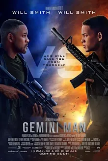

The genetics
Human cloning is the film's premise: GEMINI uses Henry's DNA to create Junior, raised by Verris as a son and trained as an assassin, and plans to produce an army of cloned soldiers, ideally modified to feel no pain or emotion. The scientist behind the method has tried to quit, and the man who exploits it is a private military contractor, so the film places the danger in the commercial and military use of the technology. Its central idea is that a clone is not the same person: Junior shares Henry's genome and talents but has a different upbringing, and the story turns on whether he can escape the life chosen for him. This matches real biology, in which a clone is genetically comparable to an identical twin born later, not a copy of the original's mind. Critics have noted that the film does not clearly separate cloning from genetic engineering, since removing pain and fear would require more than copying a genome.
How genetics is portrayed
- Overall portrayal of genetics
- negative Critics note the film treats human cloning as inherently menacing: it is the tool of a rogue military contractor building expendable soldiers, and the ending celebrates dismantling the programme and freeing the clone from it.
- Outcome of the genetic intervention
- negative The cloning programme produces Junior, raised to kill his own genetic original, and an emotionless clone soldier, and it drives the killings of Henry's colleagues and Baron; Junior's escape to a new life is the only good that comes of it.
- Clay Verris (GEMINI)
- villain Aim: military, power (negative). The head of the rogue private military company has Henry cloned, raises Junior as an assassin 'son' and fields a second, pain-free clone, justifying it as sparing soldiers' lives. The protagonists reject his reasoning, the film calls him ruthless, and Henry kills him.
- Dr. Valery Dormov
- ambivalent Aim: not stated (not applicable). The GEMINI molecular biologist designed a method to make clones devoid of pain or emotion and then tried to leave the project; he was framed as a bioterrorist and killed by Henry. His own aims are never stated, and the film presents him as both the author of the method and a victim who tried to escape it.
The story
Henry Brogan, a 51-year-old government assassin, retires after a mission in Belgium, disillusioned with killing. Soon afterwards his former colleagues are murdered, and his own agency tries to kill him. He flees with Danny, a younger agent, and his old friend Baron, and in Colombia is attacked by a young assassin who fights exactly like him. The assassin, Junior, is the adopted son of Clay Verris, head of the private military company GEMINI, and DNA tests show that he is Henry's clone. A Russian contact reveals that GEMINI runs a cloning programme and that the scientist Henry killed in Belgium had tried to leave the project after developing a method to make clones that feel no pain or emotion. Junior turns against Verris and joins Henry. Together they fight off GEMINI's forces, including another clone of Henry incapable of pain or fear, and Henry kills Verris. Junior enrols in college under a new name, with Henry and Danny's support.